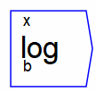

Next: pow Up: Operations Previous: divide Contents

The operator can be placed on the canvas in two ways:
When you use the direct typing method to enter the log operations, the text entry window pops up. This allows you to type a variable/parameter name starting with log (like, for example, “logical”. If you press Enter (or click on OK) with only the word log in the window, the log operation will be placed on the canvas.